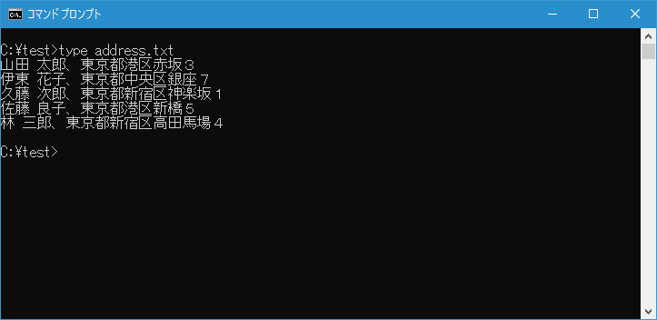
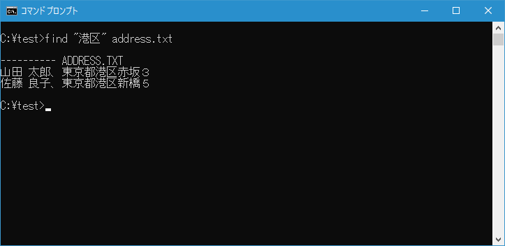
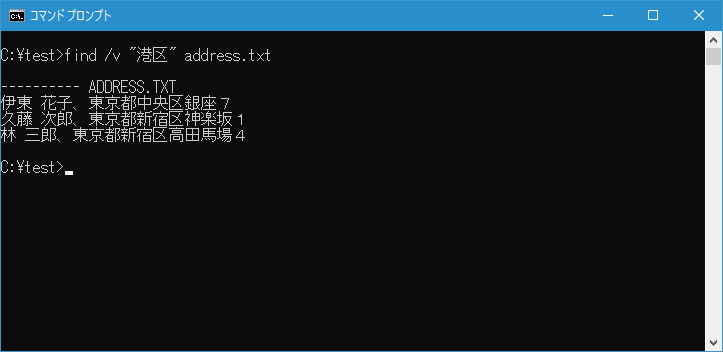
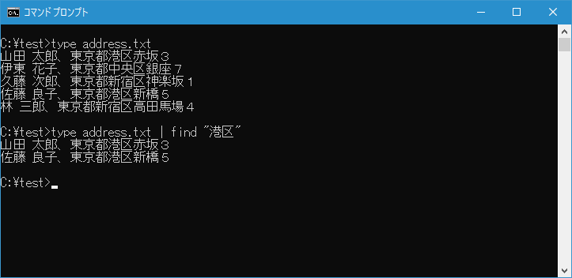
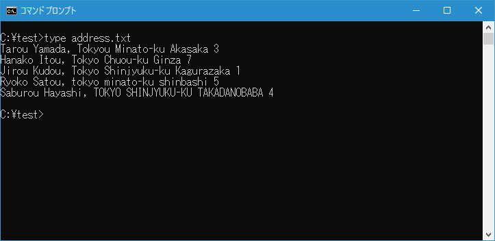
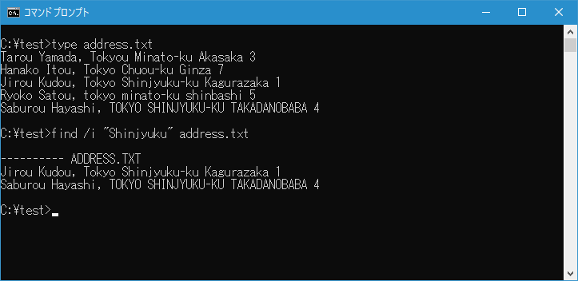

ファイル内の文字列を検索(FIND)
ファイル内やコマンドの出力結果に含まれる文字列を検索することができる FIND コマンドの使い方について解説します。
FINDコマンドの使い方
FIND コマンドはファイルの内容や別のコマンドの出力結果に含まれる文字列を検索します。書式は次の通りです。
FIND [/V] [/C] [/N] [/I] [/OFF[LINE]] "文字列" [[ドライブ:][パス]ファイル名[...]]
ファイルに含まれる文字列を検索する場合の基本書式は次の通りです。
FIND "検索する文字列" ファイル名
他のコマンドの実行結果に含まれる文字列を検索する場合の基本書式は次の通りです。パイプを使います。
コマンド | FIND "検索する文字列"
それぞれ確認していきます。
ファイルの内容を検索する
今回次のようなファイル address.txt を用意しました。

カレントディレクトリにある address.txt ファイルの中で文字列"港区"が含まれる行を表示するには次のように実行します。
find "港区" address.txt
FIND コマンドを実行すると対象のファイルの中で検索文字列が含まれる行の一覧が表示されます。

-- --
逆にカレントディレクトリにある address.txt ファイルの中で文字列"港区"が含まれない行を表示するには「/V」オプションを付けて次のように実行します。
find /v "港区" address.txt
FIND コマンドを実行すると対象のファイルの中で検索文字列が含まれない行の一覧が表示されます。

-- --
FIND コマンドを使用するときに、検索文字列が含まれる行が表示される時に行番号をつけて表示するには「/N」オプションを付けて次のように実行します。
find /n "港区" address.txt
FIND コマンドを実行すると対象のファイルの中で検索文字列が含まれる行について行番号付きで一覧が表示されます。
パイプを使って他のコマンドの実行結果を検索する
例えば TYPE コマンドを使ってカレントディレクトリにある address.txt ファイルの内容を出力してみます。
type address.txt

FIND コマンドを使用することで、他のコマンドを実行した時の実行結果の中に指定した検索文字列が含まれるものだけを表示することができます。例えば先ほどの TYPE コマンドの実行結果の中で文字列"港区"が含まれる行を表示するには次のように実行します。
type address.txt | find "港区"

大文字と小文字を区別せずに検索する
次のようなファイルを別に用意しました。

FIND コマンドはデフォルトで検索文字列の大文字と小文字を区別します。そのため、先ほどのファイルを対象に文字列"Shinjyuku"を検索すると1行だけ一致します。
検索を行う時に大文字と小文字を区別せずに検索する場合は「/I」オプションをつけて実行します。例えばカレントディレクトリにある address.txt ファイルの中で文字列"Shinjyuku"が含まれる行を大文字か小文字かに関係なく検索し表示するには次のように実行します。
find /i "Shinjyuku" address.txt
大文字小文字を区別しないため今度は2行が一致しました。

-- --
FIND コマンドを使ってファイル内やコマンドの出力結果に含まれる文字列を検索する方法について解説しました。
( Written by Tatsuo Ikura )

著者 / TATSUO IKURA
初心者～中級者の方を対象としたプログラミング方法や開発環境の構築の解説を行うサイトの運営を行っています。